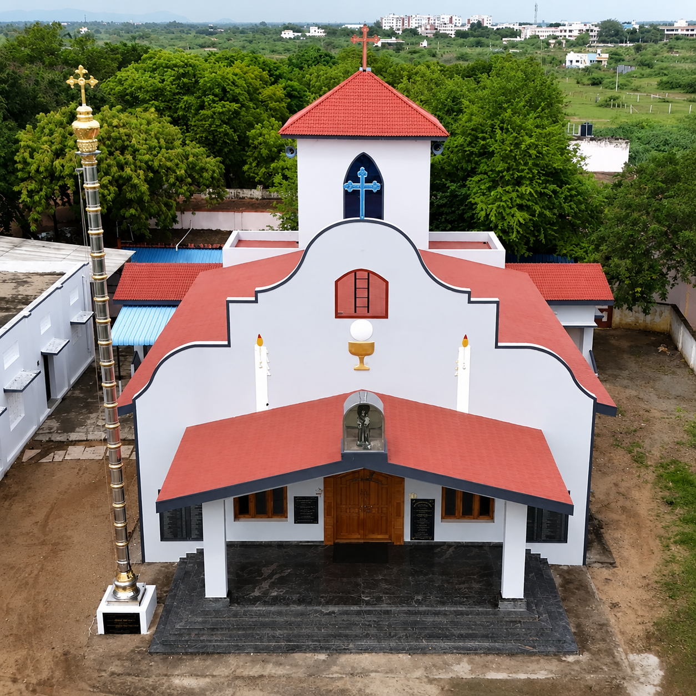

Faith
A parish shaped by daily worship, feast-day devotion, and hope-filled prayer.
விசுவாசத்திலும் அர்ப்பணிப்பிலும் வடக்கு பாகனூர் பங்கு கடந்து வந்த ஆன்மீகப் பாதை.
Experience the beauty of our church interior through an interactive 360-degree panorama.
From a humble village chapel to a beloved parish shrine, this history is carried by generations who prayed together, built together, and kept devotion to St. Antony alive through every season.
Every stone, prayer, and feast day carries the faith of our parish forward.
Witness how our parish home has grown in beauty and grace.

A parish shaped by daily worship, feast-day devotion, and hope-filled prayer.
United by our Catholic roots, celebrating milestones and carrying each other's burdens.
Committed to charity, outreach, and extending Christ's love to the marginalized.
Actions speak louder than words; let your words teach and your actions speak.
"From a noble birth in Lisbon to becoming the most beloved Franciscan saint.
Born Fernando Martins de Bulhões to a wealthy family, he surrendered his riches for spiritual wealth.
Inspired by Franciscan martyrs, he joined the order and took the name Antony, seeking profound humility.
He passed away at age 36 and was canonized within a year by Pope Gregory IX due to his immense miracles.
Known worldwide as the patron saint of lost things, the poor, and travelers.
A novice stole his valuable book. Antony prayed, the thief repented and returned it, making him the patron of lost items.
A mother promised to give bread to the poor equal to her child's weight if revived. Thus began the tradition of giving alms.
When heretics refused to listen, he preached to the fish by the river, who gathered to listen in reverence.
The first simple thatched chapel was built in Vadakku Paganur as a place of communal prayer.
With united parish labor, a permanent stone sanctuary was built and consecrated for worship.
St. Antony's Church was elevated to an independent parish, and the first parish priest took charge.
The church was completely renovated with stained glass, new altars, and beautiful interiors.
ஆலயத்தின் வளர்ச்சிக்கு உழைத்த முன்னாள் மணியக்காரர்கள் மற்றும் பட்டையதாரர்கள்.
Continue the story through altar images, feast celebrations, choir moments, and historic parish photographs preserved in the gallery.